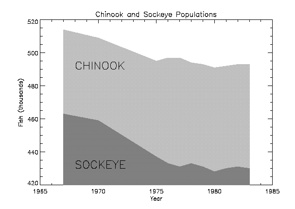

The POLYFILL procedure fills the interior of a region of the display enclosed by an arbitrary two or three-dimensional polygon. The available filling methods are: solid fill, parallel lines, or a pattern contained in an array. Not all methods are available on every hardware output device. See Fill Methods below.
Note: POLYFILL uses the current graphics device’s own polygon filling methodology when possible. For some devices, polygon filling is designed to avoid filling a given pixel more than once when neighboring polygons (that is, polygons with shared edges) are drawn. If the resulting pixel fill from POLYFILL is unsatisfactory, consider using DRAW_ROI Procedure instead.
The polygon is defined by a list of connected vertices stored in X, Y, and Z. The coordinates can be given in data, device, or normalized form using the DATA, DEVICE, or NORMAL keywords.
Line-fill method: Filling using parallel lines is device-independent and works on all devices that can draw lines. Crosshatching can be simulated by performing multiple fills with different orientations. The spacing, linestyle, orientation, and thickness of the filling lines can be specified using the corresponding keyword parameters. The LINE_FILL keyword selects this filling style, but is not required if either the ORIENTATION or SPACING parameters are present.
Solid fill method: By default, POLYFILL fills the polygon with a solid color. For devices that do not directly support filling with a solid color, the solid fill is automatically emulated using the line-fill method.
Patterned fill: Some output devices support filling with a pattern. For these devices, the fill pattern array can be explicitly specified with the PATTERN keyword. Refer to the description of that keyword for a list of devices that support patterned fill.
POLYFILL, X [, Y [, Z ]] [, IMAGE_COORD = array ] [, / IMAGE_INTERP ] [, / LINE_FILL ] [, PATTERN = array ] [, SPACING = centimeters ] [, TRANSPARENT = value ]
Graphics Keywords: [, CLIP= [X 0 , Y 0 , X 1 , Y 1 ] ] [, COLOR= value ] [, /DATA | , /DEVICE | , /NORMAL] [, LINESTYLE={0 | 1 | 2 | 3 | 4 | 5}] [, /NOCLIP] [, ORIENTATION= ccw_degrees_from_horiz ] [, /T3D] [, THICK= value ] [, Z= value ]
A vector argument providing the X coordinates of the points to be connected. The vector must contain at least three elements. If only one argument is specified, X must be an array of either two or three vectors (i.e., (2,*) or (3,*) ). In this special case, the vector X[0,*] specifies the X values, X[1,*] specifies Y, and X[2,*] contain the Z values.
A vector argument providing the Y coordinates of the points to be connected. Y must contain at least three elements.
An optional vector argument providing the Z coordinates of the points to be connected. If Z is not provided, X and Y are used to draw lines in two dimensions. Z must contain at least three elements. Z has no effect if the keyword T3D is not specified and the system variable !P.T3D= 0.
This keyword is only available when creating output in the Z-Buffer.
A 2 x n array containing the fill pattern array subscripts of each of the n polygon vertices. Use this keyword in conjunction with the PATTERN keyword to warp images over 2-D and 3-D polygons. See Z-Buffer for information and examples.
This keyword is only available when creating output in the Z-Buffer.
Specifies the method of sampling the PATTERN array when the IMAGE_COORD keyword is present. The default method is to use nearest-neighbor sampling. Bilinear interpolation sampling is performed if IMAGE_INTERP is set. See Z-Buffer for information and examples.
Set this keyword to indicate that polygons are to be filled with parallel lines, rather than using solid or patterned filling methods.When using the line-drawing method of filling, the thickness, linestyle, orientation, and spacing of the lines may be specified with keywords.
Set this keyword to a rectangular array of pixels giving the fill pattern. If this keyword parameter is omitted, POLYFILL fills the area with a solid color. The pattern array may be of any size; if it is smaller than the filled area the pattern array is cyclically repeated.
Note:
This keyword is supported for the following devices:
METAFILE, PRINTER, PS, WIN, X, and Z.
For the PostScript device, fill patterns are only supported with language level 2. Use the LANGUAGE_LEVEL keyword to DEVICE to set the PostScript language level to 2 if filled patterns are to be used.
For the Z device, the pattern can either an [
m
x
n
] array (a single-channel image), or as an [3 x
m
x
n
] array (a three-channel image) to be “warped” between the vertices of the polygons. For example, to fill the current plot window with a grid of dots, enter the following commands:
; Define pattern array as 10 by 10:
PAT = BYTARR(10,10, /NOZERO)
; Set center pixel to bright:
PAT[5,5] = 255
winsize=300
WINDOW, /FREE, XSIZE=winsize, YSIZE=winsize
; Fill the rectangle defined by the window with a 10% margin:
POLYFILL, [.1,.9,.9,.1]*winsize, $
[.1,.1,.9,.9]*winsize, /DEVICE, PATTERN = PAT
The spacing, in centimeters, between the parallel lines used to fill polygons.
This keyword is only available when creating output in the Z-Buffer.
Specifies the minimum pixel value to draw in conjunction with the PATTERN and IMAGE_COORD keywords. Pixels less than this value are not drawn and the Z-buffer is not updated. See Z-Buffer for information and examples.
See Direct Graphics Keywords for the description of the following graphics and plotting keywords:
CLIP , COLOR , DATA , DEVICE , LINESTYLE , NOCLIP , NORMAL , ORIENTATION , T3D , THICK , Z
Certain keyword parameters are only active when the Z-buffer is the currently selected graphics device: IMAGE_COORD, IMAGE_INTERP, TRANSPARENT and COLOR. These parameters allow images to be warped over 2-D or 3-D polygons, and the output of shaded polygons. See Z-Buffer for information and examples.
For shaded polygons, the COLOR keyword can specify an array that contains the color index at each vertex. Color indices are linearly interpolated between vertices. If COLOR contains a scalar, the entire polygon is drawn with the given color index, just as with the other graphics output devices.
Images can be warped over polygons by passing in the image with the PATTERN parameter, and a (2, n ) array containing the image space coordinates that correspond to each of the N vertices with the IMAGE_COORD keyword.
The IMAGE_INTERP keyword indicates that bilinear interpolation is to be used, rather than the default nearest-neighbor sampling. Pixels less than the value of TRANSPARENT are not drawn, simulating transparency.
Fill a rectangular polygon that has the vertices (30,30), (100, 30), (100, 100), and (30, 100) in device coordinates:
; Create the vectors of X and Y values:
X = [30, 100, 100, 30] & Y = [30, 30, 100, 100]
; Fill the polygon with color index 175:
POLYFILL, X, Y, COLOR = 175, /DEVICE
Many scientific graphs use region filling to highlight the difference between two or more curves, to illustrate boundaries, etc. The IDL POLYFILL procedure fills the interior of arbitrary polygons given a list of vertices. The interior of the polygon can be filled with a solid color or with some devices, a user-defined fill pattern contained in a rectangular array.
The figure below illustrates a simple example of polygon filling by filling the region under the Chinook population graph with a color index of 25 percent the maximum, then filling the region under the Sockeye population graph with 50 percent of the maximum index. Because the Chinook populations are always higher than the Sockeye populations, the graph appears as two distinct regions.
|
 |
The program that produced this figure is shown below. It first draws a plot axis with no data, using the NODATA keyword. The minimum and maximum y values are directly specified with the YRANGE keyword. Because the y -axis range does not always exactly include the specified interval (see X Versus Y Plots ), the variable MINVAL, is set to the current y -axis minimum, !Y.CRANGE[0] . Next, the upper Chinook population region is shaded with a polygon that contains the vertices of the Chinook samples, preceded and followed by points on the x -axis, ( YEAR[0] , MINVAL ), and ( YEAR[n-1] , MINVAL ). The polygon for the Sockeye samples is drawn using the same method with a different color. Finally, the XYOUTS procedure is used to annotate the two regions.
Enter the following IDL commands to create the plot:
; Set color display mode to Decomposed Color
DEVICE, DECOMPOSED = 1
; Define variables:
@plot01
; Draw axes, no data, set the range:
PLOT, YEAR, CHINOOK, YRANGE = [MIN(SOCKEYE), MAX(CHINOOK)], $
/NODATA, TITLE='Sockeye and Chinook Populations', $
XTITLE='Year', YTITLE='Fish (thousands)'
; Make a vector of x values for the polygon by duplicating
; the first and last points:
PXVAL = [YEAR[0], YEAR, YEAR[N1]]
; Get y value along bottom x-axis:
MINVAL = !Y.CRANGE[0]
; Make a polygon by extending the edges down to the x-axis:
POLYFILL, PXVAL, [MINVAL, CHINOOK, MINVAL], $
COL = 0.75 * !D.N_COLORS
; Same with second polygon.
POLYFILL, PXVAL, [MINVAL, SOCKEYE, MINVAL], $
COL = 0.50 * !D.N_COLORS
; Label the polygons:
XYOUTS, 1968, 430, 'SOCKEYE', SIZE=2
XYOUTS, 1968, 490, 'CHINOOK', SIZE=2
Example Code:
Alternatively, you can run the plot04
batch file to create the plot:
@plot04
Note: If IDL does not find the batch file, the required directory may not be in your IDL search path. All of the files mentioned are located in the examples/doc/plot subdirectory of the IDL distribution. By default, this directory is part of IDL ’s path; if you have not changed your path, you will be able to run the examples as described here. See !PATH for information on modifying IDL ’s path.
|
Original |
Introduced |